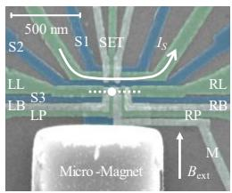
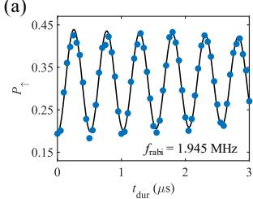

物理图像与编码
把单个电子（或空穴）囚禁在半导体量子点中，施加外磁场 后，两个自旋态发生塞曼劈裂（Zeeman splitting）：
其中 是朗德（Landé） 因子， 是玻尔磁子。硅量子点中 ，对应旋磁比 GHz/T，即每 1 T 外磁场对应约 28 GHz 的谐振频率。取 为 、 为 ，自旋态就是布洛赫球上的一点 。由于单电子有且仅有两个自旋态，不存在向计算子空间之外泄漏的通道，是一个”理想”的二能级系统——这正是 Loss 与 DiVincenzo 1998 年提出以量子点电子自旋编码量子比特（常称 Loss–DiVincenzo 比特或 LD 比特）的出发点。
这一编码的代价在于自旋与环境耦合很弱：磁场中静止的自旋既难以快速翻转，也难以直接读取。因此单自旋比特的全部工程问题都集中在两个”接口”上——用交流场（ESR/EDSR）翻转自旋，以及用自旋–电荷转换读出自旋。
理论模型
自由哈密顿量与拉莫尔进动
量子比特的静态哈密顿量为 ，拉莫尔进动角频率 ，对应圆频率
任意叠加态在 下绕布洛赫球 轴以 自由进动；噪声对 的调制（如核自旋超精细场、经磁场梯度耦合进来的电荷噪声）即表现为相位退相干。
共振驱动：ESR 与旋波近似
单比特门通过施加垂直于外磁场的驱动场实现。在电子自旋共振（electron spin resonance，ESR）方案中，实验室坐标系下的哈密顿量为
其中 为驱动磁场幅值， 为其相位， 取泡利矩阵（论文的约定）。把线性振荡场分解为两个反向旋转的分量：与拉莫尔进动同向的分量在旋转坐标系 中近似为常数，反向分量以 快速振荡，在旋转波近似（rotating wave approximation，RWA）下舍去，得到旋转系中的有效哈密顿量
共振（）时态矢量绕由 选定的赤道轴以Rabi 频率
进动：幅值决定旋转速度，相位决定旋转轴。改变后续脉冲的相位即可实现绕 轴的旋转，即”虚拟 门”（virtual Z-gate），不需要真实施加 方向脉冲。失谐 非零时，旋转轴偏离赤道平面、倾角为 ，有效振荡频率变为 ——实验上扫描失谐与脉冲时长得到的 V 形（chevron）条纹即由此而来，也是标定共振频率的标准手段。
电偶极自旋共振（EDSR）与翻转模式
直接驱动磁场需要片上天线，电流加热限制了操控速率（通常小于 1 MHz）。电偶极自旋共振（EDSR）改为用栅极上的微波电场晃动电子，借助空间梯度磁场（微磁体提供）或材料内禀自旋轨道耦合，把电荷的振荡转换成自旋感受到的等效振荡磁场，操控速率正比于梯度，典型可达 10–30 MHz。横向梯度 用于驱动，纵向梯度 则把不同量子点的 错开以实现寻址。
把电子放进失谐为 、隧穿耦合为 的双量子点中，可进一步放大电偶极矩，即”翻转模式”（flopping-mode）单自旋比特。在基矢 下，论文给出的哈密顿量为
其中 是微磁体横向梯度引入的等效自旋轨道耦合， 是两点塞曼能差。大失谐时电子局域在单点内，电偶极矩小；零失谐时电荷本征态为 ，电子在两”点间来回翻转”，电偶极矩最大。对轨道自由度对角化后可得零失谐处的自旋翻转速率
为点间距、 为驱动电场强度；失谐增大时电偶极矩与等效自旋轨道耦合同时减弱， 下降。纵向梯度 还会使比特频率随失谐漂移，（），这把电荷噪声直接耦合进比特频率——翻转模式用相干时间换取了速度，论文中零失谐处的 Rabi 频率比大失谐处提高了一个数量级。
初始化与读出
自旋态无法被电荷传感器直接分辨，读出必须先做自旋–电荷转换（spin-to-charge conversion），主流有两条路线。
能量选择隧穿（Elzerman 读出）：调节栅压使库费米面恰好落在 与 两个能级之间（读出窗口），激发态电子可以隧穿出量子点、随后一个自旋向下电子隧穿进来，在邻近单电子晶体管（SET）上留下一个”脉冲”信号；基态电子则无动作。配合排空–等待–读出（E–W–R）三段脉冲，一次测量即给出一个自旋投影结果，是单发读出的标准实现。读出结束时电子必然落在 ，因而读出同时完成了初始化。其主要误差源是费米面热展宽，要求 足够大。
泡利自旋阻塞读出：在双量子点 – 反交叉附近，单态可以进入 而三重态被泡利不相容原理阻塞在 ，两种自旋构型映射为两种电荷构型。由于区分依据是 单态–三重态能级差（轨道能级量级，远大于塞曼能），读出窗口大得多，可在约 1 K 的较高温度下工作——但硅中的谷能级可能压缩这一窗口。该路线也是单态–三重态量子比特的读出基础。
读出质量的定量条件由隧穿速率给出：论文中实现 电荷–自旋转换可见度要求 、、（ 为采样率）；实验样品在 T、mK 下测得 kHz、Hz、s，限制因素为 。在此基础上发展出的阈值无关单发读出利用多次测量概率间的关联，放宽了对电压阈值与时间窗口的要求。
参数与量级
| 参数 | 典型量级 | 说明 |
|---|---|---|
| 因子（硅） | 旋磁比 GHz/T | |
| 塞曼劈裂 | 每特斯拉约 GHz | 论文实测 GHz（T） |
| 量子点充电能 | 约 meV（电极尺度约 20 nm） | 要求 ，液氦温度已满足 |
| 硅谷能级劈裂 | 数十到数百 eV；论文样品 eV | 与 1 T 的塞曼能接近，需磁输运标定 |
| 电子温度 | –mK | 能量选择读出要求 |
| 自旋弛豫 | ms 到 s 级（论文样品 s） | 主要来自自旋–声子耦合；远长于 |
| Rabi 频率（ESR 天线） | MHz | 受天线加热限制 |
| Rabi 频率（EDSR） | –MHz | 论文实测 1.256 MHz（单点）、锗空穴 11.61 MHz |
| 数 s | 硅 5.4 μs、锗空穴 1.77 μs（论文实测） | |
| GaAs 约 10 ns；纯化硅可达数十 s | 超精细噪声为主，回波/CPMG 可延长 | |
| 单比特门保真度 | 锗空穴 RB：99.2–99.6%；Si-MOS 平均 99.5% |
实验特征
谷能级标定：硅导带六重简并在界面处劈裂，剩余二重简并再被界面电势劈裂出谷能级劈裂 。磁输运测量中，第二个电子的隧穿线随磁场先升后降，拐点处 ——论文由此定出 eV。当 与 接近时自旋–谷混合会使 骤降，是硅自旋比特特有的失效通道。
快速绝热通道寻峰：谐振峰等效宽度往往只有 MHz 量级（对应约 0.036 mT），盲目扫频效率极低。改用频率随时间线性增加的啁啾脉冲 ，在旋转系中等价于让失谐缓慢扫过零点；当扫频速率满足 时发生绝热 Landau–Zener 转移，自旋被确定性地翻转到激发态，峰高与带宽同时提升，可先把共振位置框定在数 MHz 内再用单频微波精标。
Rabi 振荡与品质因子：共振处改变脉冲时长 ，自旋向上概率呈阻尼正弦 ；扫失谐则给出前述 V 形条纹。常用品质因子 衡量相干时间内可完成的 操作数（锗空穴论文实测 ），并可粗略估计保真度 ；严格表征则用随机基准测试（RB）与门集层析（GST）。
相干时间谱系：Ramsey 序列给出 ，Hahn 回波抑制准静态噪声给出 ，多脉冲 CPMG 动力学解耦进一步滤除低频噪声。论文的锗空穴比特上三者分别为 136 ns、401 ns 与 6.75 μs（，约为 的 50 倍），且 随 线性增长，指示低频噪声主导。
材料体系差异
- 硅（Si/SiGe 与 Si-MOS）：自旋轨道耦合弱、可同位素纯化 Si 消除核自旋噪声， 比 GaAs 长约三个数量级，是长相干路线的首选；代价是 EDSR 必须依赖微磁体。Si-MOS 中单比特平均保真度已达 99.5%，射频读取保真度达 99.86%（论文）。
- 锗空穴（应变锗）：重空穴有效 因子强各向异性且自旋轨道耦合强，无需微磁体即可全电驱动，Rabi 频率轻松超过 10 MHz；代价是同样的耦合把电荷噪声引入自旋通道， 较短。详见空穴自旋量子比特。
- GaAs（GaAs/AlGaAs）：器件成熟、自旋阻塞读出窗口大，但约 个核自旋的超精细噪声把 压到约 10 ns，历史上更多用于确立自旋阻塞、交换振荡等基础物理（、论文）。
几何（holonomic）门是门操作的另一路线：利用非绝热几何相位（Berry 相的非常规推广）实现普适量子门——门参数由循环路径的几何性质（而非动力学相位）决定，对路径变形的一类误差天然鲁棒。硅量子点单自旋的非绝热几何门演示了这条路线在实用平台的落地。

几何门的原理：非绝热循环路径的几何相位——门由路径几何决定，对变形误差鲁棒。图源：Ma et al. (2023)，Fig. 1。

硅量子点的几何门演示：门保真度与鲁棒性验证——实用平台的非绝热几何门。图源：Ma et al. (2023)，Fig. 2。
与其他概念的关系
单自旋编码是半导体自旋比特家族的”单电子”基准：用两个电子的 电荷区则得到单态–三重态量子比特（以交换相互作用为 轴），三个电子给出共振交换量子比特与杂化量子比特。两个相邻单自旋比特之间最直接的两比特门同样来自交换哈密顿量 ：当 远小于两点拉莫尔频率差 时等效为受控相位（CZ 类）， 较大时则趋于 类。操控接口方面，本词条与EDSR、微磁体互为支撑；读出侧依赖单发读出与射频反射测量；退相干机制（超精细噪声与经磁场梯度进入的电荷噪声）则由动力学解耦专门处理。翻转模式所放大的自旋–电荷杂化，同时也是自旋–光子耦合（通往腔量子电动力学词条）的微观来源。
参考文献
- 首次单自旋相干驱动与自旋读出：Koppens et al., Nature 442, 766 (2006)、Elzerman et al., Nature 430, 431 (2004)。
- 硅与锗中单自旋比特的现代实现：Veldhorst et al., Nature 526, 410 (2015)、Hendrickx et al., Nature 577, 487 (2020)；综述见 Burkard et al., RMP 95, 025003 (2023)。
完整文献库（含各篇站内全文页）见 参考文献库。